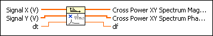
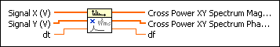
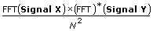

Cross Power Spectrum VI
Owning Palette: Spectral Analysis VIs
Requires: Full Development System
Computes the single-sided, scaled, cross power spectrum of two real-time signals.

 Add to the block diagram Add to the block diagram |
 Find on the palette Find on the palette |
Owning Palette: Spectral Analysis VIs
Requires: Full Development System
Computes the single-sided, scaled, cross power spectrum of two real-time signals.

| Add to the block diagram |
Find on the palette |
The Cross Power Spectrum VI computes the single-sided cross power spectrum of Signal X and Signal Y. If Signal X and Signal Y have different lengths, the VI first pads the end of the shorter input signal with zeros to make the signals the same length. The VI then uses the following equation to compute the two-sided cross power spectrum:

where N represents the common length of the two input signals after the VI pads the end of the shorter input signal with zeros.
To compute the single-sided cross power spectrum, the VI converts the two-sided cross power spectrum to the single-sided form.
df returns the frequency interval, which typically is used as the multiplier of the frequency axis in order to display the frequency domain.
The cross power spectrum is an important concept for measurements. Refer to the Cross Power Spectrum conceptual topic for more information about the power spectrum.
 | Note One difference between the Cross Power Spectrum VI and the Cross Power VI is that this VI returns the single-sided spectrum with the amplitude and phase as separate outputs, but the Cross Power VI returns the two-sided spectrum with the amplitude and phase as one complex output. |